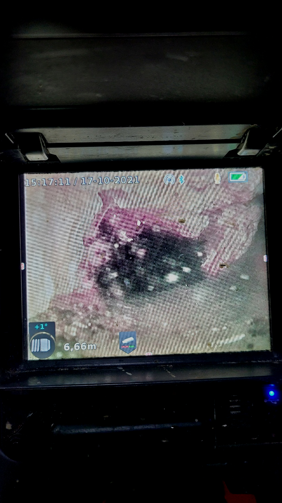
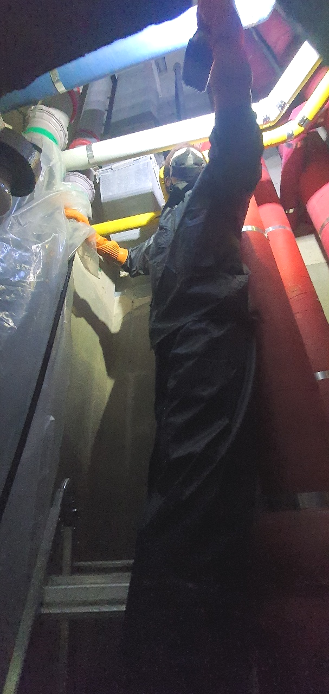
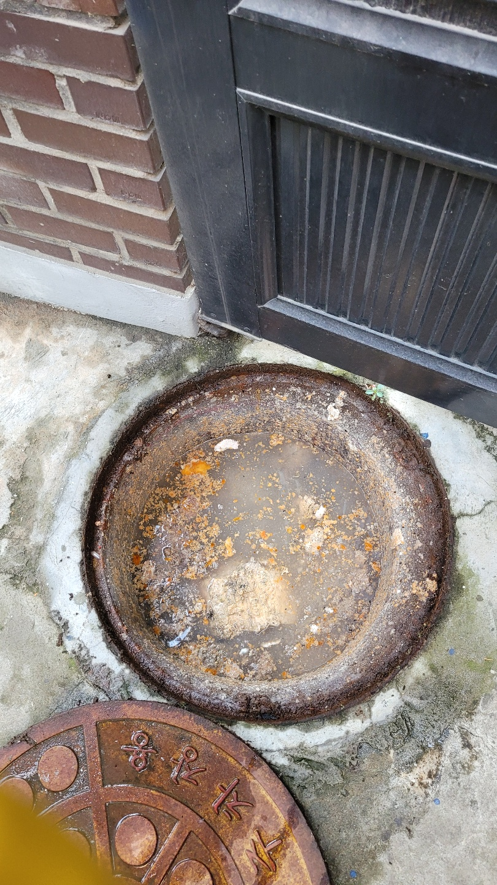
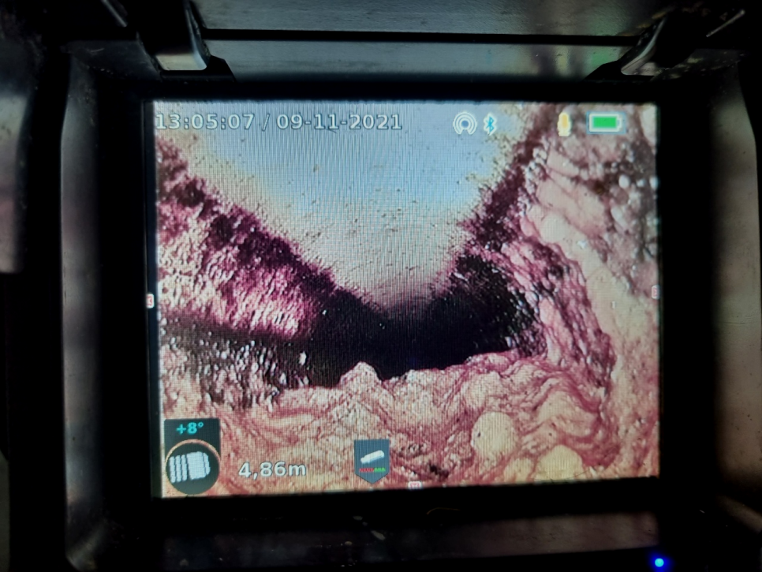
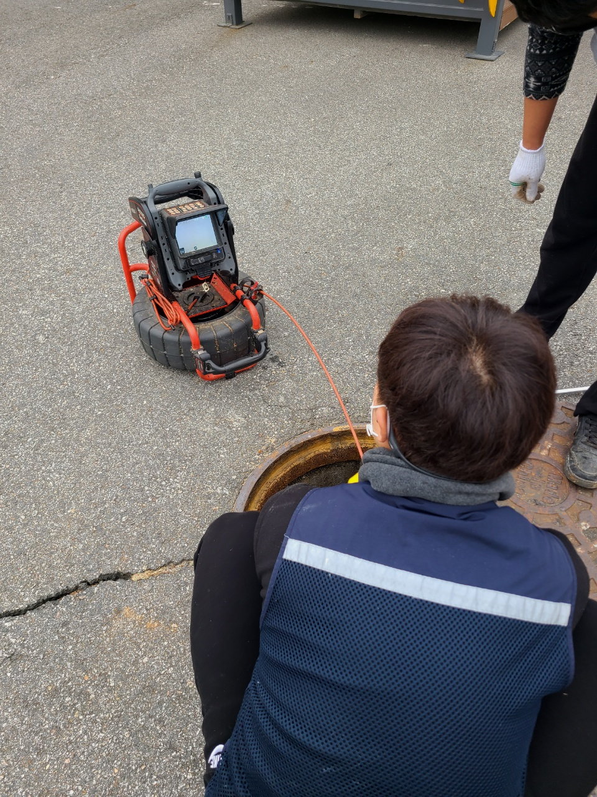
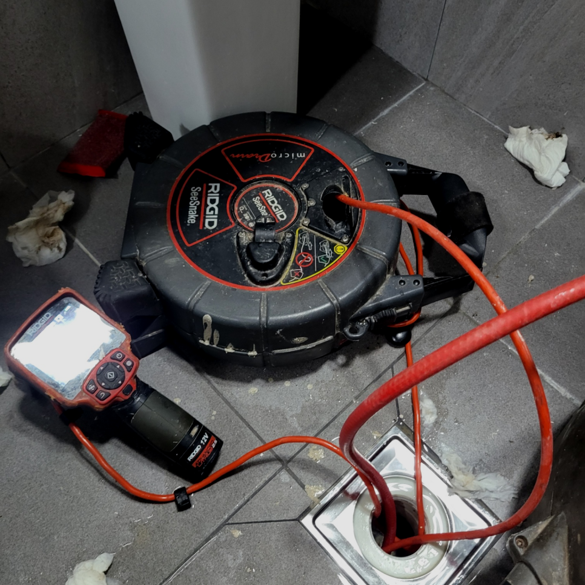

🏠 수원 팔달구 화서동 하수구막힘 뚫음 행궁동 하수구역류 해결 뚫는곳
수원 행궁동 싱크대막힘 전문 시공 후기

📋 작업 개요
- 위치: 수원 행궁동, 행궁동, 수원
- 서비스 유형: 싱크대막힘, 변기막힘, 하수구막힘, 배관막힘, 역류해결, 뚫는업체, 배관청소
- 작업 일시: 2023. 10. 11. 0:31
- 업체명: 하수구수사대 (010-5615-2118)
🔍 문제 상황
안녕하세요.
설비전문업체 "하수구수사대"를 찾아주셔서 감사합니다.
빌라,아파트,상가 가리지 않고 발생하는하수 막힘은 발생했을때 빨리 잡아주지 않으면 언제든 큰 피해를 키울수 있기때문에 초반 조치가 중요합니다.
써버린 물들이 배출수를 지나서 흐르지 못하면 막힘이나 역류증상으로 문제가 생기기 마련입니다.
수원 팔달구 화서동 하수구막힘 뚫음 행궁동 하수구역류 해결 뚫는곳

🔎 원인 분석
💡 전문가 진단: 수원 팔달구 화서동 하수구막힘 뚫음 행궁동 하수구역류 해결 뚫는곳
막힌 것 자체가 스케일이 크기 때문에 오래 걸리더라도 실속 있는 업체에 의뢰 작업해야지라고 고려하시는 분들도 많습니다. 실력부분이 신중한 포인트라고 할지라도 늦기 전에 하수뚫지 않으신다면 모든 피해를 여러분이 짊어지게 되므로 빨리 해결해야합니다.
음식을 많이 하는 일반 식당뿐만 아니라 가정에서도 우리가 매일 무심코 흘려보내는 국물에도 기름성분이 많이 포함이 되어있습니다. 퇴수막힘은 이러한 기름성분들이 배관에 머물러있는 시간이 길어지게 되면서 점점 차갑게 굳어지면 액체에서 고체로 변하게 됩니다.
보통 이상의 하수막힘은 결국 뚫어내지도 못하고 실패한 현장으로 남게 됩니다. 이런 업체는 출장비도 받을 확률이 크기 때문에 괜히 한 푼을 아끼려다가 아까운 돈만 지불해야 할 경우가 생기게 됩니다.
저렴하기만 한 비용으로 작업해 주는 곳을 알아보셨다가 손실을 입는 하수원인이 있다면 성의가 없었기 때문이에요. 분쇄 작업에는 상황들에 따른 기계 준비가 안 되어 있으면 시공이 어려워져요.
그럴 때는 관 속에 있는 이물질을 직접 제거를 하고 배수배관이 오래된 경우에는 연결 부위에 있는 고무패킹까지도 교체를 해주어야 하는 상황이 생기기도 합니다. 이번 현장에서처럼 보통 배수막힘이 있는 경우는 원인이 무엇인지를 파악을 하는 일이 가장 중요하다고 할 수 있습니다.
처음에는 급한 마음에 혼자서 셀프 요법으로 해결을 하려고 했지만 얼마 지나지 않아서 아예 퇴수가 막혀버리다 보니 아무런 소용이 없었다고 하셨습니다.

🔧 작업 과정
실제로 배수구석션 작업까지 마치고 나서 내시경 검수를 진행해보니 초기에 빨갛게 나오던 내시경 화면이 푸르게 변한 것을 알 수가 있었는데요.
배수구 막힘 해결을 위해선 무슨장비가 필요할지정확히알수없어 전반적인수리에 악영향을끼치지않도록 빠짐없이 가지고있어야된답니다 가령고객님들이 전문가를선별하는과정에서 작은부분도 소홀히하지않으시면 내집의 귀중한하수관을 깨끗하게만들수있어요!
이렇기때문에 전문적인지식은 금방해결가능한 방법을주게되는데요. 스스로어떻게든 배수 뚫을려하는생각이 가져오게되는손해는 시간적금전적 문제뿐만아니라 심리적으로도 손해가발생하게돼요.
경력이낮은분이 출장가게되면 너무꽉막혔을때 아무것도못하고 시간을잡아 먹기만하고 좋지않은상황이 일어나기도합니다.다양한곳에 가고있지만 경력이낮은 배수업체에서 못뚫어주고가서 저희팀에게 연락주시는 단골분들이 여럿계십니다
살살쓰신다고해도 쭉사용하시다보면 깊은곳까지 쌓여서 퇴수구청소도구를 쓰시거나 매일조심스럽게 하는것이 번거롭다고 느끼실겁니다.밤늦게집에 도착하시면 생각조차 안나게돼요
강한 힘으로 이물질들을 빨아들이기 시작하니, 먼지 덩어리는 물론이고 여러 가지 이물질들이 빨려 올라왔고 이 사이에 머리카락 덩어리도 상당량 올라왔습니다. 다행히 딱딱하게 고착화된 오물은 없는 것 같았습니다.
저희가 청소를 얼마나 제대로 했는지 작업을 마무리하고 나서는 고객님께 내시경 화면을 보여드립니다. 밖에서 물을 부어서 배수 테스트도 진행하지만, 구석진 부분에 이물질이 존재하거나 굳은 석회가 있는지 확인하는 건 어렵기 때문에 작업한 후 내시경 장비를 통해서 결과를 세세하게 보고해 드리는데요,
그래서 전문설비업체의 도움이 꼭 필요한 것입니다. 확실하지 않은 이유와 장비로 뚫으려고 한다면 상황은 더 악화되며 배출구막힘이 심해지고 해결이 된다는 보장도 없지만 처음부터 전문 장비의 도움을 받으며 작업하게 되면 빠른 뚫음은 물론이거니와 막힌 변기도 바로 시원하게 사용이 가능해질 테지요.


✅ 작업 완료
빠르게 달려가겠습니다. 전문 장비가 있다고 좋은 업체라기보다는 퇴수구전문 장비가 있으면서 그걸 잘 다루는 전문가가 있어야 좋은 업체인데요, 저희는 그간 다양한 현장에서 쌓은 노하우와 실력으로 어느 현장에 더 문제없이 해결이 가능합니다.
그러니 지금 막혀서 당황스럽다고 한다면 걱정하지 마시고 저희를 불러주시면 지금 이곳처럼 바로 원인을 찾아서 뚫어드리도록 하겠습니다.
#하수구막힘 #하수구뚫음 #하수구역류 #씽크대막힘 #싱크대역류 #오수관막힘 #하수구청소 #욕실하수구막힘 #변기막힘 #하수구뚫는비용 #싱크대수리 #화장실막힘




⚠️ 주방 싱크대 배관 막힘 예방 수칙
- ✅ 기름기가 묻은 식기나 프라이팬은 설거지 전 키친타올로 반드시 기름때를 닦아내세요.
- ✅ 주기적으로 싱크대 개수대에 뜨거운 물을 가득 받아 한 번에 내려 배관 내부 기름을 씻어내세요.
- ✅ 배수구 거름망을 미세한 필터로 사용하시고 음식물 찌꺼기가 틈으로 새어 들지 않게 관리하세요.
- ✅ 베이킹소다와 식초를 뜨거운 물과 함께 일주일에 한 번씩 부어주면 배관 살균과 막힘 예방에 좋습니다.
💡 핵심 정리
- 확실한 장비 작업(내시경 점검 및 샤프트 스케일링)으로 원인을 뿌리 뽑습니다.
- 작업 후 1년 이내에 동일한 부위 재발 시 100% 무상 A/S 서비스를 보장합니다.
- 서울 · 경기 · 인천 전 지역에 24시간 언제든 긴급 출동할 수 있도록 항시 대기 중입니다.
❓ 자주 묻는 질문 (FAQ)
🚨 수원 행궁동 싱크대막힘 문제로 고민이신가요?
정확한 원인 진단과 확실한 시공으로 재발 없는 해결을 약속드립니다.
24시간 긴급 출동 | 서울 · 경기 · 인천 전지역 | 1년 내 재발 시 무상 A/S